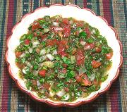

|
Pebra / Chancho en PiedraChile - Pebra / Chancho en Piedra | ||||
| Makes: Effort: Sched: DoAhead: |
2-1/2 cup ** 1-1/2 hrs Best |
This is the "must have" table condiment for the entire length of Chile. The difference between Pebra and Chancho en Piedra is the Tomatoes - see Comments. | |||
|
4 1-1/4 1 1/2 1/2 1 ------ 2 2 1/2 1/4 |
oz # cl c c --- T t t t |
Onion, white (1) Tomatoes (2) Garlic Parsley (3) Cilantro (3) Chili, Aji (4) -- Dressing Olive Oil, ExtV Lemon Juice Salt Pepper |
Make - (1-1/2 hrs - 25 min work)
|